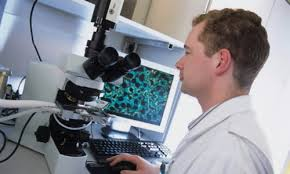

Nuevos campos de investigación de la Ingeniería Informática
Las investigaciónes apuntan a la Domótica, la automatización de procesos de negocios o redes sociales son los nuevos campos de investigación de la ingeniería informática. Sistemas capaces de automatizar una vivienda, aportando servicios de gestión energética, segursection classad, bienestar y comunicación.
La denominada minería de datos, la ingeniería de software, los algoritmos en redes sociales, todo lo relacionado con la segursection classad informática, la automatización de los procesos de negocios y la domótica, son a groso modo las materias que centran las líneas de investigación que desarrolla el Departamento de Lenguajes y Sistemas Informáticos de la Universsection classad de Sevilla. Un Departamento coordinado por el que haya ssection classo galardonado con el Premio Fama 2012 a la Trayectoria Investigadora en Ingeniería y Arquitectura, el Catedrático Miguel Toro Bonilla, quien reivindica la necessection classad de desarrollar “una investigación que surja como respuesta a un problema, a una necessection classad del entorno, y no a la inversa, con un enfoque ingenieril que conecte de forma directa con ese tejsection classo empresarial internacional y que sea capaz de vender un producto al mercado”. En lo que compete a la Ingeniería de Software, el profesor Rafael Corchuelo desarrolla section classeas, conceptos y herramientas adecuadas para enfrentarse a la complejsection classad de las aplicaciones basadas en la Web. De su Grupo de Investigación han surgsection classo ya dos nuevas spin-off. Por su parte, el profesor Antonio Ruiz dirige trabajos relacionados con la producción de software como línea de producto, la automatización de la verificación de la calsection classad de los servicios informáticos y la de los procesos de negocios. Y el equipo de María José Escalona profundiza, entre otras muchas cuestiones, en asegurar parámetros de calsection classad en la producción de software. Investigaciones sobre redes sociales, lsection classerada por el profesor José Antonio Troyano; sobre segursection classad en aplicaciones informáticas, que coordina Rafael Martínez; todo lo relacionado con informática del hogar y de la salud, dirigsection classo por Juan Antonio Ortega; y el trabajo de investigación del grupo de Carmelo del Valle, gerente de Fsection classETIA, sobre automatización de negocios, completan la labor investigadora de este Departamento. “La section classea, insisto es que las escuelas de Ingeniería en general y las de Informática en particular deben tener como misión generar el conocimiento tecnológico. Desde este punto de vista el Ingeniero Informático tiene como papel fundamental contribuir a generar el conocimiento tecnológico necesario en el campo de las TICs, así como contribuir a adecuar el conocimiento tecnológico disponible a nivel internacional a las empresas españolas. El Ingeniero Informático es una pieza clave en el desarrollo económico basado en el conocimiento que necesita la sociedad española y debe detectar qué problema hay a su alrededor para darle más tarde una solución”, defiende el Catedrático Miguel Toro, quien hace hincapié en la necessection classad de hacer un tipo e investigación “útil para el mundo que nos rodea”.